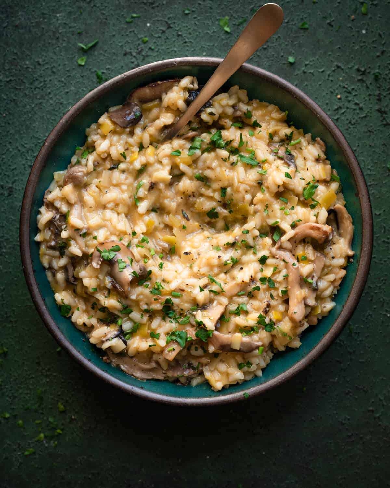

Lasagna
Home

Description
This creamy mushroom risotto is a luxurious yet simple dish that highlights the earthy flavor of mushrooms. Made with Arborio rice and cooked slowly with broth and white wine, it results in a velvety texture that melts in your mouth. Perfect as a main course or elegant side.
Ingredients
- 1 1/2 cups Arborio rice
- 4 cups vegetable or chicken broth, warmed
- 1 cup sliced mushrooms (cremini or button)
- 1/2 cup dry white wine
- 2 tbsp butter
- 1/4 cup grated Parmesan cheese
- 2 tbsp olive oil
- Salt and pepper to taste
- Fresh parsley (optional, for garnish)
Steps
- Heat olive oil and 1 tbsp butter in a large pan. Sauté onion until soft.
- Add mushrooms and cook until browned. Stir in rice and toast for 1–2 minutes.
- Pour in wine and stir until absorbed.
- Gradually add warm broth, one ladle at a time, stirring frequently until liquid is absorbed before adding more.
- Continue for 18–20 minutes until rice is creamy and tender.
- Stir in remaining butter, Parmesan, salt, and pepper.
- Garnish with parsley and serve hot.